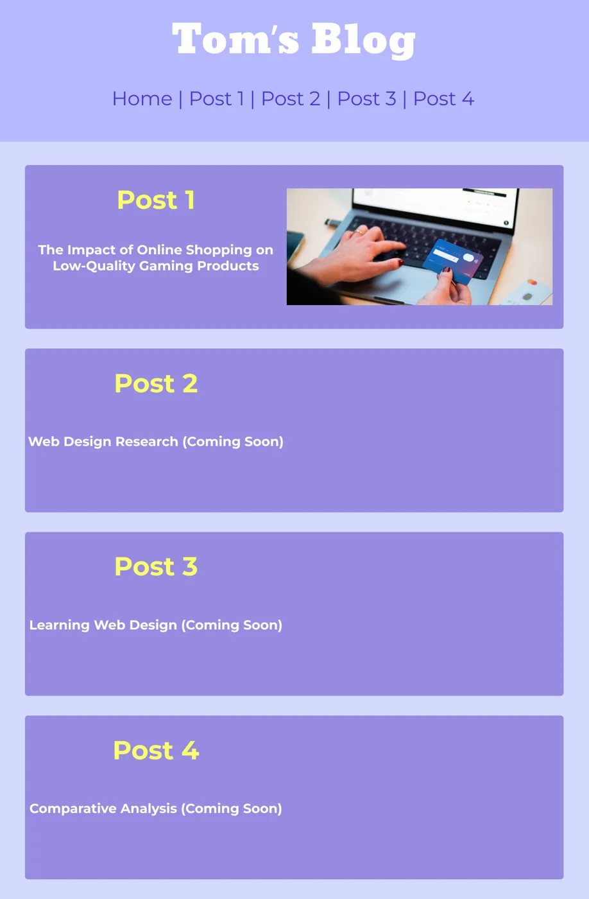

Game of Pig — Playable Game
JavaScript game with turns, scoring, and dice interactions.
Open project ↗Original coursework projects with working local links.
JavaScript game with turns, scoring, and dice interactions.
Open project ↗
Interactive story generator with word-input prompts.
Open project ↗
Interactive photo-based storytelling and exploration.
Open project ↗
Original blog website built for web coursework.
Open project ↗